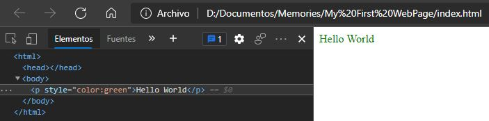

NeiValHein03/08/2021
I always knew about the existence of HTML and CSS programming languages but until that moment it didn't call my attention, it was until in my final year of school we were asked to present the final project which we had to deliver in two months, it was there when I thought about making a blog, first I thought "last year I made a game as a project, this year it should be something different and amazing" and immediately the thought of a blog came to my head, hands to work I decided to investigate about html and css, until that moment my knowledge of html and css was the creation of a simple P tag with the text "hello world" stylized with CSS inline, that first experience with html and css I had in 2017 with only 15 years old.
do you want to get in touch with me? You can do it by sending me an email to the address neivalhein@gmail.com